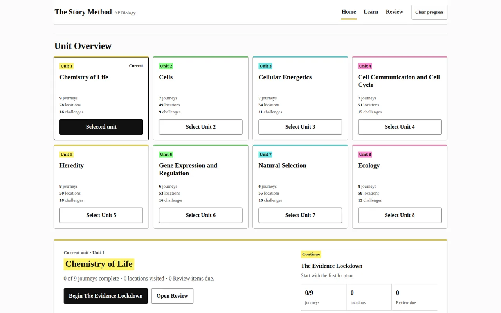

The Story Method
Across eight AP Biology units, fictional locations give students a place to encounter scientific problems before returning to them through recall, review, and application. The Unit 1 example follows an unexpected laboratory observation into decisions about experimental controls.

JourneySceneRecallChallenge